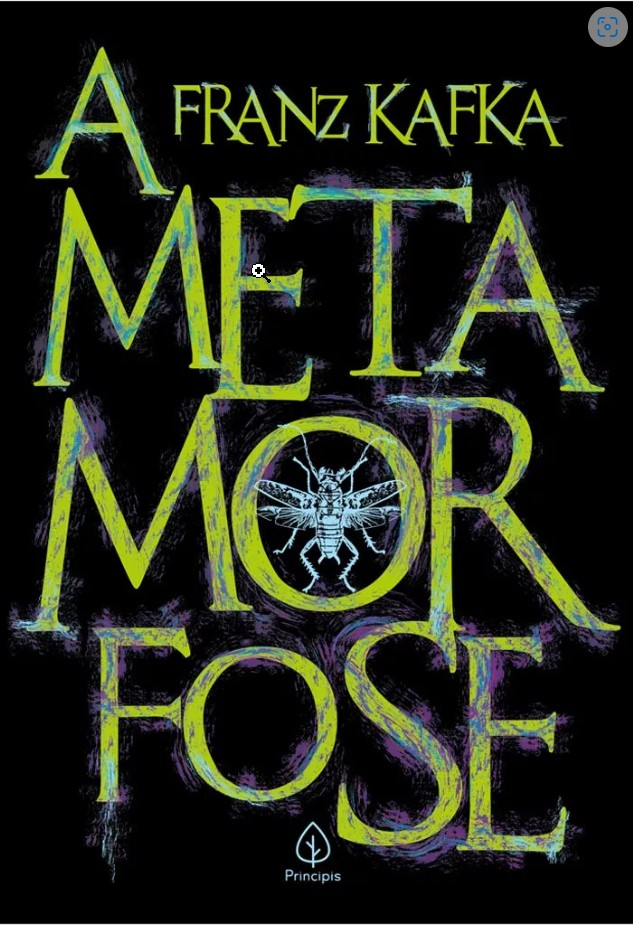

A metamorfose
Franz Kafka
Sinopse
O caixeiro-viajante Gregor acorda metamorfoseado em um enorme inseto e percebe que tudo mudou e não só em sua vida, mas no mundo. Ele, então, acompanha as reações de sua família ao perceberem o estranho ser em que ele se tornou. E, enquanto luta para se manter vivo, reflete sobre o comportamento de seus pais, de sua irmã e sobre a sua nova vida
Detalhes do livro
| EDITORA | Principis; Integral edição (27 setembro 2019) |
|---|---|
| IDIOMA | Portugues |
| NÚMERO DE PÁGINAS | 98 |
| IDIOMA | Portugues |
| DIMENSÕES | 22.8 x 15.6 x 1.2 cm |
| ESTRELAS | 4,5/5,0 |
Resenha
O livro conta a história de Gregor Samsa – um caixeiro viajante que transforma-se em um inseto nojento. A narrativa já começa com a transformação do personagem, deixando todo o contexto para depois. A frase que inicia o livro já é clássica: “Certa manhã, ao despertar de sonhos intranquilos, Gregor Samsa encontrou-se em sua cama metamorfoseado num inseto monstruoso”. A partir disso, a história é narrada com um realismo inesperado que associa o inverossímil e o senso de humor a tudo o que é grotesco, trágico e cruel na condição humana.* Gregor era quem sustentava a família financeiramente, sendo o único que trabalhava. Não gostava de seu trabalho, mas o mantinha por causa do pai, da mãe e da irmã. Porém, depois da transformação, Gregor não é mais uma salvação, mas torna-se um problema e uma vergonha para a família.